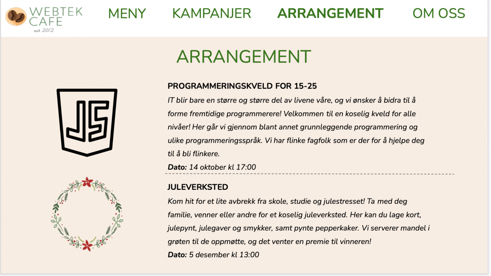

P2 Prosjekt Design
Anine, August, Elin, Johannes, Martine
7. october 2021
Administrative Detaljer
Klient: Berit Johansen
Navn på websiden: Webtek Cafe
Hensikt, mål, og målgruppe
Nettstedets hensikt vil hovedsakelig være å tilrettelegge for kunder og besøkende på kafeen.
Dette vil innebære blant annet at de kan se på menyen og bestille mat og drikke. Nettstedets
brukere skal også ha mulighet til å komme i kontakt med ledelsen av kafeen for spørsmål,
tilbakemeldinger eller reservasjoner. I tillegg skal nettstedet fungere som en informasjonsplattform
for kafeen, hvor besøkende på nettstedet kan få alt av relevant informasjon som åpningstid, adresse,
priser, vareutvalg og slikt.
De siste årene har restaurant- og kafèbransjen møtt store utfordringer når det kommer til koronasituasjonen.
Webtek Kafe vil også fortsette å møte på utfordringer da det enda vil være potensielle smittefarer for besøkende.
Målet ved å lage en nettside for Webtek Kafe er å digitalisere bestilling av mat og drikke, slik at det vil være
mer smittevennlig for besøkende å være sosiale under en kopp kaffe. På den måten slipper kunden å gå til disken
for å bestille eller betale, og servitørene trenger heller ikke å gå rundt i kafeen og ta bestillinger/betalinger.
En slik nettside skal optimalt sett gjøre det enklere og tryggere for kunder å dra på kafe, slik at Berit kan
oppnå en bedre omsetning. En bedre omsetning vil også føre til at Berit kan kunne tilby bedre tilbud for kundene,
som igjen vil føre til bedre kundeservice.
Nettsidens primære målgruppe vil være kafeens kunder og besøkende. Nettsiden er tiltenkt å være det kunden får
opp når vedkommende sitter ved bordet og skanner QR-koden for å se meny og bestille mat. En stor del av nettsiden
vil derfor være skreddersydd for kundenes behov. Enda mer spesifikt vil målgruppen på kafeen være folk som ønsker
et sted å sitte når de skal programmere, der de kan ta en kaffe og møte andre som driver med IT. I tillegg ønsker
klienten at nettstedet skal appellere til nye potensielle kunder, andre interesserte eller brukere som snubler
over nettstedet tilfeldig. Det vil derfor være nødvendig at nettsiden gir tilstrekkelig informasjon til folk uten
tidligere kjennskap til kafeen, slik at de vil få servert alt de trenger å vite ved deres første besøk på nettstedet.
Navigasjons struktur
Navigasjonsstrukturen på nettsiden til Webtek Kafe er “clique”, men med lineær struktur to steder, som vist i Figur 1.
bestilling.html kan kun nås fra meny.html og kontaktskjema.html kan kun nås fra om-oss.html. Fra bestilling.html og
kontaktskjema.html er det kun mulig å gå tilbake til forrige side. Utenom dette er det mulig å navigere mellom alle
de andre sidene fra hvor som helst ved hjelp av navigasjonsbaren øverst på hver side. På forsiden er det av designmessige
årsaker valgt å plassere navigasjonsbaren midt på siden. Logoen til Webtek Kafe som er plassert helt til venstre i
navigasjonsbaren (på alle sidene unntatt forsiden) kan alltid brukes til å navigere til forsiden.
Grunnen til at vi har valgt “clique” struktur med innslag av lineær struktur to steder, er for å gjøre det så enkelt
som mulig for en besøkende å finne frem til relevante deler av nettsiden. Formålet med nettsiden er at kunder kan
bestille mat og se kampanjer når de sitter ved bordet, men også at det skal være mulig å finne informasjon om kafeen
og arrangementer før man kommer på besøk. Ettersom at nettsiden har flere ulike formål er det lagt opp til at man
enkelt kan navigere til riktig sted fra forsiden. En "clique”-struktur bidrar også til å gi en oversikt over hvilke
deler nettsiden inneholder uten at alt innholdet trenger å vises.
Vi syns ikke det er nødvendig å skulle nå bestillingssiden før man har vært innom menyen og valgt varer, og har
derfor valgt en lineær struktur mellom disse sidene. Det samme gjelder siden for kontaktskjema. Vi syns ikke det
er nødvendig at den besøkende får tilgang til kontaktskjemaet før vedkommende har kommet til om-oss-siden og lest
gjennom informasjonen som er gitt der.
Figur 1: Navigasjonsstrukturen til nettsiden.
Sideoppsett og -utseende
Målet med nettsiden er at kunder i web tek cafe skal kunne undersøke hva kafeen byr på. Nettsiden skal gjøre at
besøkende skal ha lyst til å undersøke mer om webtek kafe. Målet med nettsiden sitt sideoppsett og utseende er
at det skal være fin og oversiktlig. Vi har valgt en tydelig navbar som vil være tilgjengelig på alle siden,
slik at det skal være lett å navigere seg frem og tilbake på siden. Siden skal ikke minst innhold god og nyttig
informasjon om stedet, i tillegg til at det skal være lett leselig. Logoen vil også alltid være tilgjengelig til
enhver tid, slik at man enkelt kan komme seg tilbake til forsiden. Navbaren vil vise til sidene: meny, kampanjer,
arrangementer og om oss.
Klienten vår ønsker en nettside som er ryddig og oversiktlig med et behagelig fargetema, gjerne beige. Hun ønsker
et beige fargetema ettersom dette gir et varmt og innbydende uttrykk, og gjør at kunden får lyst til å bestille kaffe
og bakverk en kjølig høstdag. Klienten ønsker en fin og lett leselig font. Det er å foretrekke at nettsiden er brukervennlig,
slik at det er lett for kunden å finne noe de har lyst på og bestille. Klienten vil gjerne ha en form for meny-bar et eller
annet sted på siden, eventuelt i form av knapper. Vi har dermed designet nettsiden vår etter klientens sine ønsker.
Den presise stilen av nettsiden, som vil gå igjen på alle sider vises nedenfor:
Hovedfont: Nunito, men Times New Roman vil bli brukt til back up.
Fargetema:
- Tekst: Grønn/svart
- Bakgrunn: beige
- Navigerings bar: hvit
- Footer (bakgrunnsfarge): grønn
Body width: 960px
Linker:Gjennom navigering baren vil man ha tilgang til alle sidene.
Navbar posisjon: På forsiden vil navbar´en være plassert under slideshowet, mens på de andre sidene vil den være plassert
øverst for en oversiktlig struktur. Selve navbaren er hvit, mens linkene vil være grønne, samt bli fremhevet basert på
siden man er på.
Footer:Footer vil være tilsvarende lik på hver side. Den vil gi informasjon om åpningstider, sted og kontaktinformasjon.
Logo:Logoen vil være sentrert på forsiden. På de andre sidene vil de ligge i navigerings baren til venstre.

Figur 2: Logoen til Webtek Cafe

Figur 3: “Mockup” av sidenes generelle utseende
Innhold
1. Index.html
Forsiden vil være den første siden den besøkende kommer til. Forsiden har samme design som resten av nettsiden,
men med særlig fokus på enkelhet og oversikt. Den har derfor minimalt med tekst og innhold, men gir en oversikt
over hva nettsiden inneholder og oppfordrer til bruk av navigasjonsbaren. Formålet er å vekke interesse hos den
besøkende slik at vedkommende navigerer videre til en av nettsidens kategorier.
“Mockup” av forsiden er vist i Figur 4. Øverst vil det være et slideshow der det veksles mellom inspirerende bilder
fra kafeen og aktuelle kampanjer. Bildene dekker om lag halve siden og går helt ut i margene slik at de dekker hele
bredden av skjermen. Under slideshowet finner man navigasjonsbaren som linker til de ulike sidene på nettsiden.
Denne dekker også hele skjermbredden Under navigasjonsbaren vises kafeens logo i stor størrelse og midtstilt på siden.
Scroller man videre ned på forsiden finner man footeren som inneholder praktisk informasjon om åpningstider, adresse
og kontaktinformasjon.
Figur 4: “Mockup” for index.html
2. Meny - meny.html
Denne siden vil vise kafeens meny. Den vil vise alt som er tilgjengelig på menyen
med både bilde, en kort beskrivelse og pris. Hensikten med siden er å vise fram
alt som er mulig å kjøpe for kunden. Bildet og beskrivelsen av hver rett skal gi
kunden lyst til å bestille akuratt den retten og må derfor vekke interesse.
I tillegg skal kunden kunne bestile mat på denne siden. Hver rett vil ha en nedtrekksmeny,
hvor kunden kan velge et antall av hver ting på menyen som de ønsker å bestille. Nederst på siden
vil det være en "bestill"-knapp som kunden til slutt trykker på for å fullføre kjøpet sitt.
Figur 5: “Mockup” for menysiden
3. kampanje.html
Kampanjer er den andre siden de besøkende kan besøke (i rekkefølge fra venstre i navigeringsbaren). Den følger
de andre sidene sitt fargetema, og er oversiktlig. Den har fokus på å fremme de aktuelle kampanjene, ved bruk
av bilder og tekst i senter. Formålet med siden er at kunden skal kunne få god informasjon om Webtek cafe sine
kamapanjer.
På figur 6 ser du en “mockup” av kampanjesiden. Navbaren vil også på denne siden være øverst. På siden vil det
være en sentrert tittel; “Gjeldende tilbud”. Kampanjene flyter på siden, men oversiktlig og enkelt. Det vil være
gitt informasjon om kampanjen, og et bilde av det aktuelle tilbudet. Tilsvarende som på de andre sidene, vil footer
være i bånd av siden, som gir den ytterligere informasjonen om webtek cafe.
Figur 6: “Mockup” for kampanjer
4. arrangementer.html
Arrangementer er den tredje nettsiden man kan klikke seg inn. Den er enkel å lese, med nyttig informasjon om kommende
arrangementer. Formålet med denne siden er å bidra til flere besøkende til kafeen ved å tilby blant annet arrangementer
hvor man kan lære seg å programmere.
Siden følger fargetemaet, samt er oversiktlig slik at man enkelt kan lese gjennom hvilke arrangementer som kommer. Teksten
og overskriften vil være sentrert til midten for å gjøre det mest oversiktlig, samt enklere å lese. Dette vil være en av
sidene med mest tekst, og vi har derfor valgt en enkel skrifttype som er lett å lese. Sammen med tekst om arrangementene,
har vi bilder som er passende til arrangementene. Målet videre vil være å bruke bilder fra selve arrangementene.
Navigeringsbaren er også her plassert øverst på siden slik at besøkende lett kan finne tilbake til forsiden eller andre sider.
Også denne siden har en vi en footer, som besvarer spørsmål angående åpningstider, lokasjon og kontaktinformasjon.

Figur 7: “Mockup” for arrangement
5. omoss.html
“Om oss” er den fjerde siden man kan nå via navigerings-baren. Oppgaven til siden er å gi kunder og besøkende nødvendig
informasjon om bedriften, samtidig som den skal være med å inspirere folk til å besøke kafeen. Siden er enkel, og består
hovedsakelig av en informerende tekst, samt relevante opplysninger som lokasjon, kontaktopplysninger, kort om hva som
serveres og annen info om arrangementer. Det er viktig at teksten ikke er alt for lang og innviklet, men samtidig er det
viktig å gi potensielle besøkende og interesserte en klar beskrivelse av hva de har å forvente når de skal besøke kafeen.
Tilbudet om kurs og andre arrangementer er ment som en gulrot, og derfor er det ekstra viktig å informere om dette til de
som besøker nettsiden. Mye av kontaktinformasjonen ligger i tillegg i en en footer, nederst på forsiden (index.html fila).
Grunnen til at dette også ligger på denne siden er fordi om-oss.html skal gi kjapt svar på hva kafeen tilbyr, hvor den er
og hvordan man kontakter bedriften.
Også på denne siden er det mye tekst, og da passer fonten “nunito” bra fordi den er enkel og lett leselig. Større avstand
mellom linjene gjør at teksten ikke fremstår som like tung, og vil sannsynligvis virke som mer behagelig for leseren.
Linjeavstanden som er brukt er på 1.5. Fargetemaet matcher igjen resten av sidene, noe som gjør nettsiden mest mulig
sammenhengende og behagelig. Det ligger også ved et bilde av kafeen, som gjør siden finere.
Figur 8: “Mockup” for "om oss"
Minstekrav
Dette er planen for hvordan vi skal løse JavaScript-funksjonene på nettsiden:
Martine, Elin og Anine skal ta seg av følgende funksjoner:
1. slideshow.js
Denne funksjonen skal få slideshowet på nettsidens forside til å fungere. En rekke bilder skal etter tur vises på forsiden. Det er viktig at bildene
har samme størrelse, og at overgangen mellom bildene er lett på øyet. Siden slideshowet er noe av det første brukeren møter når de besøker nettstedet, er det viktig at
Det fungerer feilfritt, og at det er tydelig framstilt for å fange brukerens oppmerksomhet.
2. navbar.js
Hensikten med denne JavaScript-funksjonen er å få navigeringsbaren til å fungere. Knappene på navigeringsbaren skal hjelpe brukeren å flytte seg rundt til de forskjellige seksjonene
på nettstedet. En bruker som aldri har vært på nettstedet skal enkelt kunne navigere fram og tilbake, så navigeringsbaren må være brukervennlig og lett å benytte seg av.
Følgende funksjoner skal implementeres av August og Johannes:
3. meny.js
En Javascript-funksjon som skal bygge opp menyen på nettstedet. Dette gjøres ved å kjøre en for-løkke gjennom et array som inneholder alle rettene på menyen. Det vil så bli
laget elementer for hver rett som skal framstilles på menysiden. Det vil være viktig at elementene som opprettes får en id, slik at de kan referes til i andre funksjoner.
Arrayet skal inneholde nødvendig informasjon om hver rett som pris, beskrivelse og bilde.
4. bestilling.js
Denne Javascript-funksjonen skal tre i gang når brukeren trykker på "bestill"-knappen nederst på menysiden. Funksjonen skal da regne sammen total pris, lage en regning til brukeren og
få opp tekst på skjermen som takker brukeren for kjøpet.
Plan
Her følger planen vi skal følge for å komme i mål med prosjektet. Planen framstilles som en liste med filer og mapper, samt en oversikt over hvem som har oversikt over hva.
Organisering
Liste over filer og mapper:
- index.html
- meny.html
- kampanje.html
- arrangementer.html
- omoss.html
- img/
- background_image.png
- background_border.png
- Logo.png
- slideshow_1.png
- slideshow_2.png
- slideshow_3.png
- slideshow_4.png
- slideshow_5.png
- menyrett_1.png
- menyrett_2.png
- menyrett_3.png
- menyrett_4.png
- ...
- menyrett_30.png
- js/
- slideshow.js
- navbar.js
- meny.js
- bestilling.js
- css/
Arbeidsfordeling og tidsfrister
| Filnavn |
Beskrivelse |
Ansvarlig |
Tidsfrist |
| index.html |
Forsiden til nettstedet |
Anine |
04.11.2021 |
| meny.html |
Menysiden hvor menyen er og brukeren kan bestille matretter |
August |
04.11.2021 |
| kampanjer.html |
Siden hvor alle kampanjene vises |
Martine |
04.11.2021 |
| arrangementer.html |
Siden hvor alle arrangementene vises |
Elin |
04.11.2021 |
| omoss.html |
En side hvor kontaktinfo og info om kafeeieren står |
Johannes |
04.11.2021 |
| Logo.png |
Logo for Kafeen |
Elin |
04.11.2021 |
| slideshow.js |
JavaScript-funksjonen som kjører slideshow på forsiden |
Martine |
04.11.2021 |
| navbar.js |
Javascript-funksjonen som får navigeringsbaren til å fungere |
Anine |
04.11.2021 |
| meny.js |
Javascript-funksjon som bygger menysiden |
August |
04.11.2021 |
| bestilling.js |
JavaScript-funksjonen som kjører bestilling |
Johannes |
04.11.2021 |
| style.css |
CSS-filen for hele nettstedet |
Samtlige |
04.11.2021 |